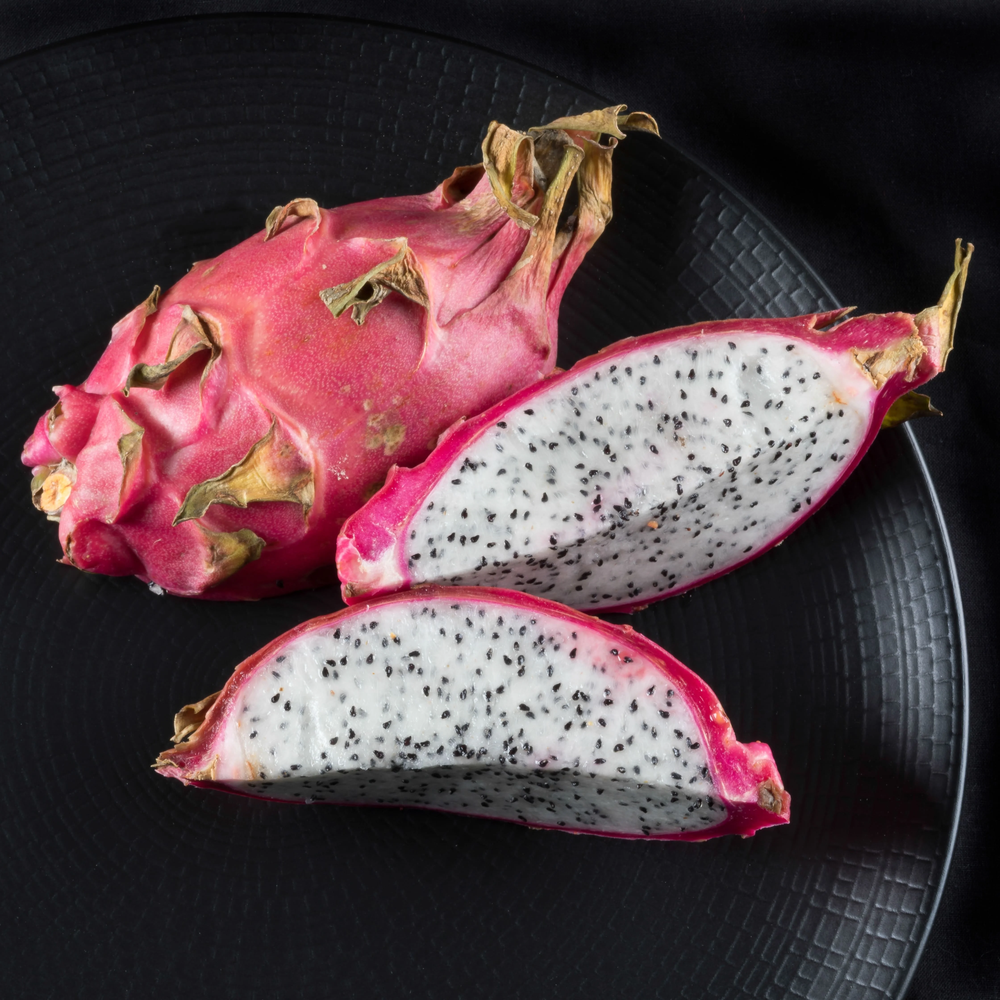

Essa é a fruta conhecida como “Fruto do dragão” sua aparência exótica causa uma vontade insaciável de prová-la e de saber se há algo ali, além da sua aparência e aspectos únicos. A pitaya é cultivada no Brasil, China, Israel e no México, e existem três variações, a pitaya branca, a verde e a vermelha. A pitaya é uma ótima opção para aqueles que querem emagrecer, visto que possui um baixo teor calórico. Assim como outras frutas, a pitaya é rica em vitamina C e possui capacidades antioxidantes, pois é rica em polifenóis, vitaminas e minerais, importantes para a imunidade do corpo.
Com sabor doce, e nascida de uma cactaceae, a pitaya possui fibras que não são digeridas pelo intestino humano, mas sim fermentada, o que aumenta a quantidade de boas bactérias que compõem a microbiota intestinal, e acaba por regular o desenvolvimento de más bactérias no corpo. A fruta possui propriedades que diminuem a resistência à insulina, pois tem em suas capacidades o de regular os níveis de açúcares na corrente sanguínea , e auxilia em condições como a da pré diabetes e na prevenção do desenvolvimento da diabetes em si.
É necessário que o solo possua boa drenagem e seja rico em matéria orgânica. Pitayas são plantas que necessitam de espaço para se desenvolverem. Elas também precisam de bastante sol, de bastante exposição à luz solar. É preciso retirar as sementes da polpa da fruta, mantê-las úmidas e só então plantá-las. Só precisam ficar levemente enterradas e com uma leve camada de terra. É preciso regar a Pitaya constantemente, para manter o solo úmido e a planta hidratada. Após a planta receber a altura de aproximadamente 30 cm, é aconselhável que uma estaca seja posta para que ela tenha onde se apoiar durante seu crescimento.